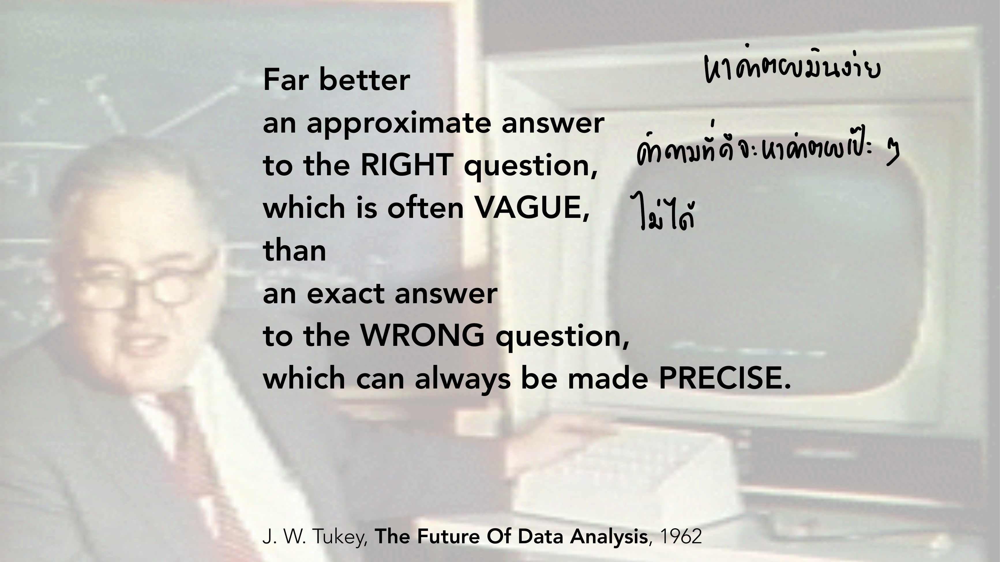
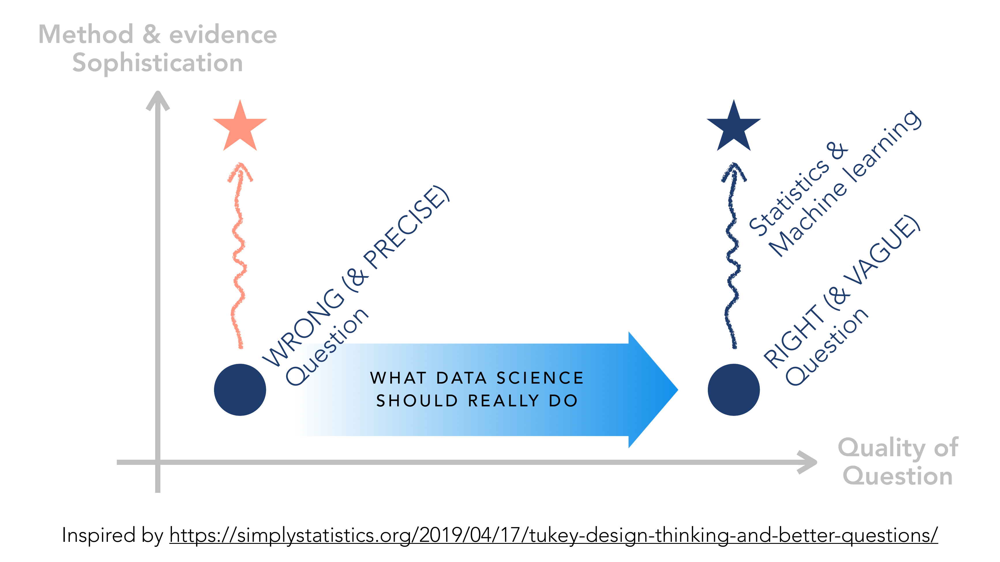
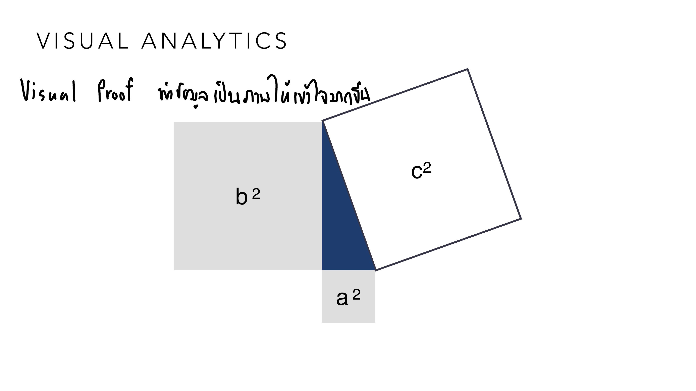
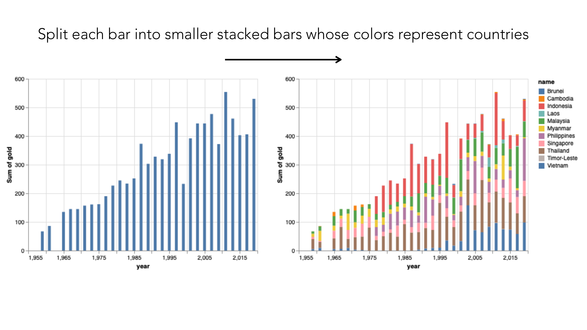
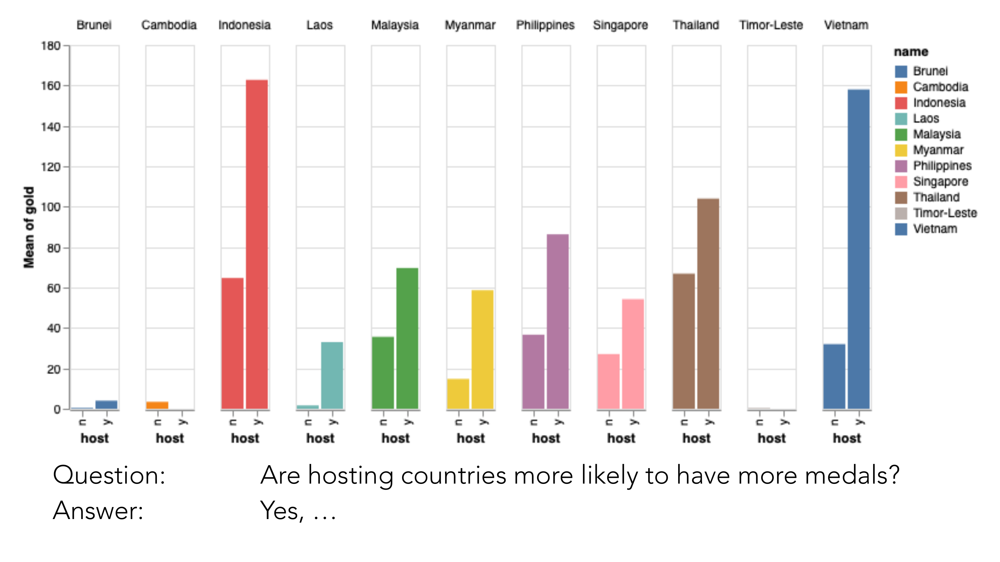
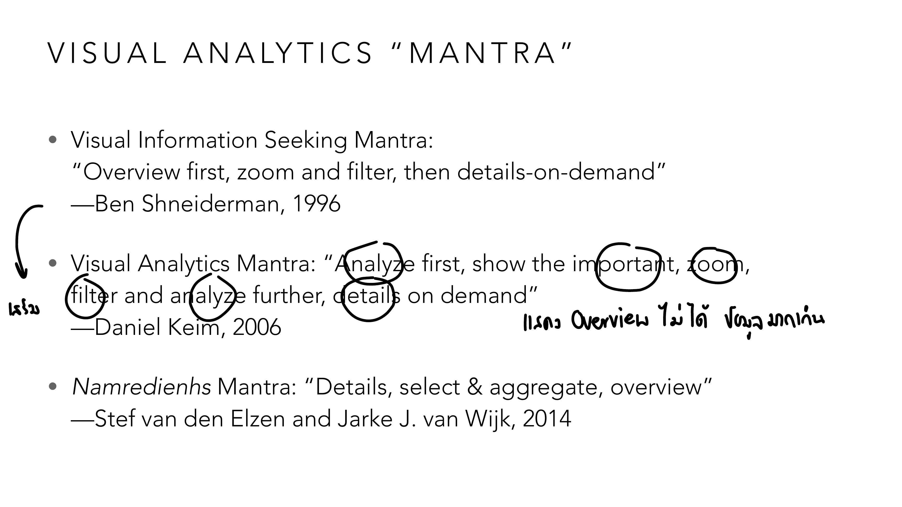
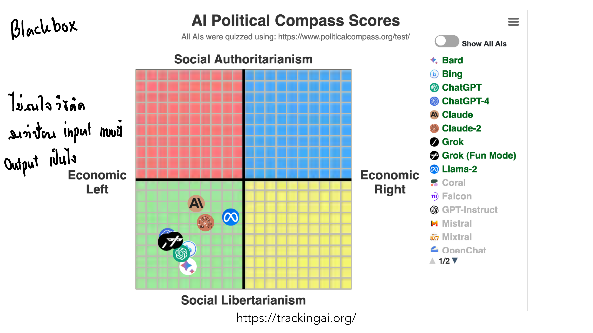

vis-10-analytics.pdf
Lesson 9 สอน "เทคนิค" interaction ทีละแบบ บทนี้ถอยออกมามองภาพใหญ่: interaction ทั้งหมดนั้นมีไว้ทำอะไรกันแน่? คำตอบคือ Visual Analytics — การใช้ visualization และ interaction เป็นเครื่องมือคิด ไม่ใช่แค่เครื่องมือแสดงผล อาจารย์ใช้ dataset เหรียญทองซีเกมส์ (ชุดเดียวกับที่ทำ D3.js/Altair ตอน Lesson 4-5) มาสาธิตกระบวนการทั้งหมดแบบ end-to-end.
รากฐานทางปรัชญาของ Visual Analytics ย้อนไปถึงยุค 1960 ก่อนมีคำว่า "data visualization" ด้วยซ้ำ:

คำพูดของ Tukey นี้ตรงข้ามกับสัญชาตญาณของคนเรียนสถิติทั่วไปที่มักอยากได้ "คำตอบแม่นยำ" — Tukey บอกว่าคำถามที่ดี (เช่น "ทำไมยอดขายตก") มักตอบแบบแม่นยำ 100% ไม่ได้ตั้งแต่ต้น (VAGUE) แต่ก็ยังดีกว่าคำถามที่ตอบได้แม่นยำเป๊ะ (เช่น "ค่าเฉลี่ยคือเท่าไหร่") แต่ไม่ตรงประเด็นที่อยากรู้จริง ๆ — โน้ตกำกับไว้ว่า "หาคำตอบมันง่าย คำถามที่ดีจะหาคำตอบเป๊ะ ๆ ไม่ได้" นี่คือเหตุผลที่ Visual Analytics เน้น "สำรวจ" (explore) มากกว่า "คำนวณให้จบ" (compute to completion) — บางทีภาพที่ให้แค่คำตอบคร่าว ๆ ต่อคำถามที่ใช่ มีค่ากว่าตัวเลขแม่นยำต่อคำถามที่ไม่มีใครถาม.
สไลด์ถัดมาแปลงคำพูดของ Tukey ให้เป็นกราฟ 2 แกนที่จำง่ายกว่าเดิม:

แกนตั้งคือ "ใช้วิธีการซับซ้อนแค่ไหน" (สถิติ/Machine Learning ขั้นสูง) แกนนอนคือ "คำถามที่ถามดีแค่ไหน" — ดาวสีส้มทางซ้ายอยู่สูงบนแกนตั้ง (ใช้ ML ขั้นสูงมาก) แต่อยู่ซ้ายสุดบนแกนนอน (คำถามผิด แต่แม่นยำ — "WRONG & PRECISE Question") ส่วนดาวสีน้ำเงินทางขวาอยู่สูงพอกันบนแกนตั้ง แต่อยู่ขวาสุดบนแกนนอน (คำถามถูก แต่ยังคลุมเครือ — "RIGHT & VAGUE Question") ลูกศรใหญ่ตรงกลางชี้จากซ้ายไปขวา กำกับว่า "นี่คือสิ่งที่ data science ควรทำจริง ๆ" — กราฟนี้เตือนตรง ๆ ว่าการทุ่มเทเรียนเทคนิคซับซ้อน (deep learning, สถิติขั้นสูง) ไม่ได้แปลว่ากำลังทำงานที่มีคุณค่าเสมอไป ถ้าเทคนิคเหล่านั้นถูกใช้ตอบ "คำถามผิด" อยู่ ต่อให้แม่นยำแค่ไหนก็ยังอยู่มุมซ้ายของกราฟ ในขณะที่การถามคำถามที่ถูกทาง (แม้จะตอบได้แค่คร่าว ๆ ในตอนแรก) มีค่ามากกว่า — นี่คือ Tukey's quote ในรูปกราฟิกที่จับต้องได้ ตอกย้ำธีมเดียวกับหัวข้อ 1 อีกครั้งด้วยภาพคนละแบบ.
Visual Analytics ไม่ได้จำกัดแค่ธุรกิจ/ข้อมูลขนาดใหญ่ — แม้แต่การพิสูจน์ทางคณิตศาสตร์ก็ใช้ "ภาพ" เป็นเครื่องมือคิดได้:

ภาพนี้พิสูจน์ a² + b² = c² โดยไม่ต้องเขียนสมการพีชคณิตยาว ๆ เลยสักบรรทัด — แค่จัดสี่เหลี่ยมจัตุรัสของด้าน a, b, c ให้เห็นว่าพื้นที่ b² บวกกับสามเหลี่ยมเชื่อมสีน้ำเงินสามารถจัดเรียงใหม่พอดีกับ c² ได้ (ต้องอาศัยการเลื่อน/หมุนรูปในใจ) — โน้ตกำกับตรง ๆ ว่า "Visual Proof ทำข้อมูล(หรือในที่นี้คือข้อพิสูจน์)เป็นภาพให้เข้าใจมากขึ้น" นี่คือตัวอย่างที่ชัดที่สุดว่า "การมองเห็น" กับ "การให้เหตุผล" ไม่ใช่คนละเรื่องกัน — บางครั้งภาพเดียวพิสูจน์ได้แน่นหนากว่าตัวอักษรทั้งหน้า.
อาจารย์เอาชุดข้อมูลเหรียญทองซีเกมส์ (dataset เดียวกับที่ใช้เขียนโค้ด D3.js/Altair) มาสาธิตว่า Visual Analytics แก้คำถามจริงได้อย่างไร ตั้งแต่ยังตอบไม่ได้จนตอบได้:

Bar chart ทางซ้ายตอบคำถาม "ปีไหนมีเหรียญทองรวมเยอะสุด" ได้ แต่ตอบไม่ได้เลยว่า "ปีไหนประเทศไหนได้เยอะสุด" เพราะข้อมูลประเทศถูกยุบรวมหายไปหมด — พอแค่ "แยกแท่งเดิมเป็นแท่งย่อยซ้อนกัน แล้วให้สีแทนประเทศ" (ไม่ได้เปลี่ยนข้อมูลเลย แค่เปลี่ยน visual mapping) คำถามเดิมก็ตอบได้ทันที: มองแถบสีแดง (Indonesia) ที่มักอยู่บนสุดของแท่งตั้งแต่ปี 1990 เป็นต้นมา บอกได้เลยว่า Indonesia คือประเทศที่มักได้เหรียญทองมากสุดของปีนั้น ๆ บ่อยครั้ง — นี่คือตัวอย่างรูปธรรมของ "interaction" ในความหมายกว้าง: แค่เปลี่ยน encoding ก็เปลี่ยนจากตอบไม่ได้เป็นตอบได้.

คำถามที่สองซับซ้อนกว่าเดิม: "ประเทศเจ้าภาพมักได้เหรียญทองเยอะกว่าไหม" — ต้องเทียบ "ค่าเฉลี่ยเหรียญทองตอนเป็นเจ้าภาพ" กับ "ค่าเฉลี่ยตอนไม่ได้เป็นเจ้าภาพ" ของแต่ละประเทศแยกกัน สไลด์นี้ใช้ small multiples (1 แผงต่อ 1 ประเทศ) เทียบแท่ง "n" (ไม่ได้เป็นเจ้าภาพ) กับ "y" (เป็นเจ้าภาพ) — ผลคือแทบทุกประเทศ (อินโดนีเซีย เวียดนาม ไทย ฯลฯ) แท่ง "y" สูงกว่าแท่ง "n" อย่างชัดเจน (เวียดนามต่างกันมากสุด: ~32 ตอนไม่เป็นเจ้าภาพ เทียบ ~158 ตอนเป็นเจ้าภาพ) — คำตอบ "Yes" ที่ได้ไม่ได้มาจากการเดา แต่มาจากการออกแบบ visualization ที่ตรงกับคำถามพอดี.
คำถาม "ปีไหนได้เหรียญทองเยอะสุด" เป็นคำถามปิด (closed-ended) มีคำตอบเดียวชัดเจน แต่คำถามอย่าง "ทำไมประเทศเจ้าภาพถึงได้เหรียญเยอะกว่า" เป็นคำถามเปิด (open-ended, "How & Why") ที่ต้องอาศัยการสำรวจต่อ ไม่มีคำตอบสำเร็จรูปในข้อมูลชุดเดียว — slide เตือนไว้ว่า ถ้าเครื่องมือ (dashboard/tool) ควบคุมผู้ใช้มากเกินไป (บังคับดูได้แค่มุมที่กำหนดไว้) จะตอบคำถามเปิดแบบนี้ไม่ได้เลย ต้องเปิดให้ผู้ใช้ปรับเปลี่ยนมุมมองได้อิสระในระดับหนึ่ง.
Shneiderman's mantra จาก Lesson 9 ("Overview first, zoom and filter, then details-on-demand") ไม่ใช่คำตอบสุดท้าย — สไลด์นี้เทียบ 3 เวอร์ชันที่พัฒนาต่อกันมา:

Shneiderman (1996) เริ่มที่ "Overview first" — สมเหตุสมผลตอนข้อมูลยังพอมองเห็นภาพรวมได้ในจอเดียว แต่ Keim (2006) เปลี่ยนเป็น "Analyze first" แทน — โน้ตกำกับเหตุผลไว้ตรง ๆ ว่า "แรก overview ไม่ได้ [เพราะข้อมูล] เยอะมากเกิน" — พอข้อมูลเข้าสู่ยุค Big Data (หลายล้านแถว) การแสดง "overview" ตรง ๆ กลายเป็นจุดดำทึบไม่มีความหมาย ต้องให้ machine วิเคราะห์/สรุปก่อน ถึงจะมีอะไรให้ดูเป็น overview ที่มีความหมายได้ ส่วน van den Elzen & van Wijk (2014) กลับด้านไปไกลกว่านั้นอีก: เริ่มจาก "Details" ก่อนเลย (ชื่อ mantra ของพวกเขาคือ "Namredienhs" — สะกดกลับคำว่า "Shneiderman" เป็นการเล่นคำแบบตั้งใจล้อกับต้นตำรับ) — บทเรียนคือ: ไม่มี mantra ไหนถูกเสมอ ลำดับขั้นตอนที่เหมาะสมขึ้นอยู่กับขนาด/ลักษณะข้อมูลที่มีอยู่ตรงหน้า.
เมื่อโมเดล machine learning กลายเป็น "black box" ที่รู้แค่ input/output แต่ไม่รู้กลไกภายใน Visual Analytics เข้ามาช่วยเปิดกล่องดำนั้น:

เครื่องมือนี้ให้ AI แชทบอทหลายตัว (ChatGPT, Claude, Grok, Llama ฯลฯ) ทำแบบทดสอบ Political Compass แล้วพล็อตตำแหน่งคะแนนของแต่ละตัวลงกราฟ 2 แกน (Economic Left/Right × Social Authoritarianism/Libertarianism) — สังเกตว่าเครื่องมือนี้ไม่รู้เลยว่าโมเดลแต่ละตัวคิดหรือประมวลผลภายในอย่างไร รู้แค่ "ป้อนคำถามชุดเดียวกันเข้าไป (input) แล้วได้คำตอบอะไรออกมา (output)" — โน้ตกำกับตรงประเด็นเลยว่า "ไม่สนใจว่าจะได้คำตอบยังไง สนใจแค่ input คืออะไร output เป็นไง" นี่คือนิยามของ "black box" ในบริบท AI: ตัดสิน/วิเคราะห์พฤติกรรมโมเดลจากภายนอก โดยไม่จำเป็นต้องเข้าใจโครงสร้างภายในเลย — ซึ่งเป็นจุดตั้งต้นที่ Explainable AI พยายามแก้ไข (อยากรู้ "ทำไม" ไม่ใช่แค่ "อะไร").
ไล่ทุกหน้าของ vis-10-analytics.pdf — หน้าที่มี ✓ ถูกอธิบายและ/หรือใส่รูปในเนื้อหาข้างบนแล้ว ที่เหลือเป็นตัวอย่างประกอบ/ลิงก์อ้างอิง/งานวิจัยเชิงลึก (etc).
| หน้า | เนื้อหา | สถานะ |
|---|---|---|
| 1–2 | ปก + ตารางเรียนทั้งเทอม | etc — บริบทวิชา |
| 3–14 | ต่อยอด Interaction จาก Lesson 9 (Overview+Detail, Focus+Context ตัวอย่างเพิ่มเติม, minesweeper demo) | etc — ต่อยอดจาก Lesson 9 แล้ว ไม่ทำ quiz ซ้ำ |
| 15–16 | เกริ่นนำ Visual Analytics (information asymmetry) | ✓ ส่วนหนึ่งของบทนำ |
| 17–21 | Visual Proof: พีทาโกรัส + อ้างอิง Philip Ording 99 Variations | ✓ หัวข้อ 2 (มีรูป) |
| 22–26 | ตัวอย่างเสริม + เกริ่นนำ Sensemaking | etc — เกริ่นนำหัวข้อ 4 |
| 27–34 | Sensemaking loop ตัวอย่าง (handwritten digit recognition, missing data charts อ้างอิง McNutt/Kindlmann/Correll ซ้ำจาก Lesson 6, Twitter network) | ✓ ส่วนหนึ่งของหัวข้อ 4 |
| 35 | Open-ended (How & Why) vs เครื่องมือที่ควบคุมผู้ใช้มากเกินไป | ✓ หัวข้อ 4 |
| 36 | Data Scientist ประเภทต่าง ๆ (Type-A Analysts vs Type-B Builders) | etc — บริบทเสริม นอกขอบเขต quiz หลัก |
| 37–39 | เกริ่นนำ Method & evidence Sophistication vs Quality of Question | ✓ ส่วนหนึ่งของหัวข้อ 1 |
| 40 | Method & evidence Sophistication vs Quality of Question ฉบับเต็ม | ✓ หัวข้อ 1 (มีรูป) |
| 41 | Tukey quote: "Far better an approximate answer..." | ✓ หัวข้อ 1 (มีรูป) |
| 42–43 | Tukey quote เพิ่มเติม (EXPOSURE, logic of mathematics) | ✓ ส่วนหนึ่งของหัวข้อ 1 (อ้างอิงในเนื้อหาแล้ว) |
| 44–51 | เกริ่นนำ SEA Games case study + ลิงก์ dataset | ✓ ส่วนหนึ่งของหัวข้อ 3 |
| 52 | SEA Games คำถามที่ 1 เกริ่นนำ | ✓ ส่วนหนึ่งของหัวข้อ 3 |
| 53–54 | SEA Games คำถามที่ 1: stacked bar chart แยกสีตามประเทศ | ✓ หัวข้อ 3 (มีรูป) |
| 55–57 | SEA Games คำถามที่ 2 เกริ่นนำ (highlight เจ้าภาพ, group by country) | ✓ ส่วนหนึ่งของหัวข้อ 3 |
| 58 | SEA Games คำถามที่ 2: small multiples เทียบ host vs non-host | ✓ หัวข้อ 3 (มีรูป) |
| 59–63 | SEA Games สรุปคำถาม-คำตอบ + interaction ที่เป็นไปได้เพิ่มเติม | ✓ ส่วนหนึ่งของหัวข้อ 3 |
| 64–74 | Design Study methodology + อ้างอิงงานวิจัยเครื่องมือ VA จำนวนมาก + Polaris (ต้นแบบ Tableau) | etc — งานวิจัยเชิงลึก นอกขอบเขต quiz หลัก แต่ Polaris ควรรู้ว่าคือต้นแบบ Tableau |
| 75 | วิดีโอสาธิต Polaris (day filter) | etc — ตัวอย่างประกอบ |
| 76–77 | เกริ่นนำ Mantra (Shneiderman + van den Elzen แยกหน้า) | ✓ ส่วนหนึ่งของหัวข้อ 5 |
| 78 | Mantra ทั้ง 3 เวอร์ชันเทียบกัน | ✓ หัวข้อ 5 (มีรูป) |
| 79–83 | อ้างอิง design study methodology (Sedlmair/Meyer/Munzner) + ML4VIS survey + เกริ่นนำ XAI | etc — งานวิจัยเชิงลึก นอกขอบเขต quiz หลัก |
| 84–86 | เกริ่นนำ Explainable AI (XAI) + Sensemaking loop สำหรับ AI | ✓ ส่วนหนึ่งของหัวข้อ 6 |
| 87 | XAI: trackingai.org — AI เป็น black box | ✓ หัวข้อ 6 (มีรูป) |
| 88–96 | เครื่องมือ/งานวิจัย XAI เพิ่มเติม (Squares, PDPilot, LSTMVis, seq2seq-vis, ประเด็นจริยธรรม/fairness) | ✓ ส่วนหนึ่งของหัวข้อ 6 (สรุปแนวทางหลักในเนื้อหาแล้ว) |
| 97–105 | XAI แนวทางแก้ (สร้างโมเดลอธิบาย vs visualize โดยตรง) + งานวิจัยเชิงลึกปิดท้าย | ✓ หัวข้อ 6 |
สงสัยตรงไหน ถามได้เลยในแชท — ผมเป็นผู้สอนของคุณ ถามซ้ำได้ ถามลึกได้ ไม่ต้องเกรงใจ.